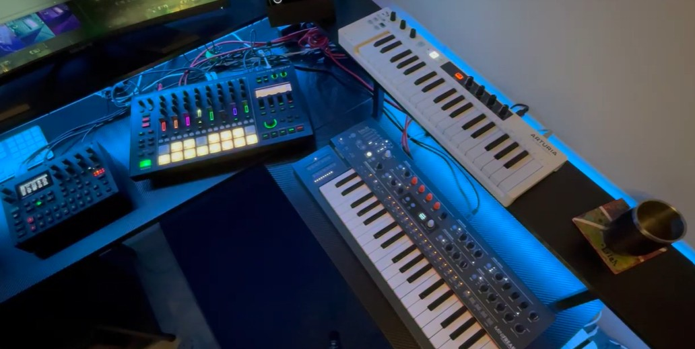

Synth Patch Hero
A puzzle game about building synth patches. Take gigs, wire modules, shape sounds, and learn a little synthesis along the way.
I'm Sheldon — a software engineer who likes building useful tools, odd little games, and systems that make music more fun. This is a small collection of what I've been working on lately.
The work I’m focused on professionally.
Developing training curriculum for reinforcement-learning systems used to build AI models. The focus is helping agents develop practical software-security skills through real-world challenges, with clear objectives and verifiable outcomes.
Explore Bugcrowd RLA few recent experiments that escaped the notebook and made it onto the internet.
A puzzle game about building synth patches. Take gigs, wire modules, shape sounds, and learn a little synthesis along the way.

A group jukebox that blends everyone's taste into one queue. Guests join from their phones; the host plays from their own music sources.

A social-first dungeon crawler for solo adventurers or a small party. Explore strange places, make tactical choices, and see how deep the expedition goes.

Move bulky folders to another drive without breaking the paths apps already use. Rehome handles the junction, verification, rollback, and recovery.
I make electronic music under the Crocs & Socks / djcrocsnsocks names. Mostly synths, drum machines, and a healthy amount of knob turning. Here are a few places to listen.
